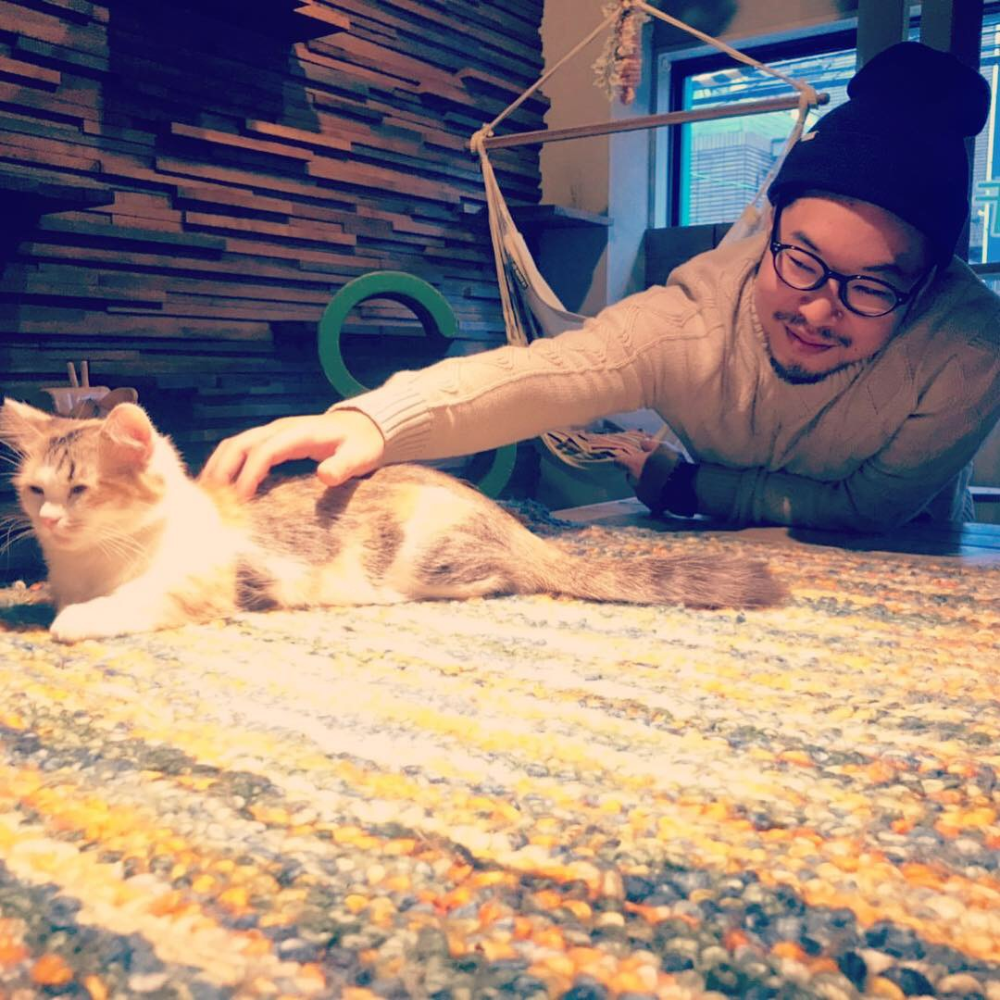

Kazuto Tashiro | WDD130
Hello! My name is Kazuto Tashiro and I am from Osaka, Japan. I enjoy music. I am living with my wife and two cats.
Hello! My name is Kazuto Tashiro and I am from Osaka, Japan. I enjoy music. I am living with my wife and two cats.